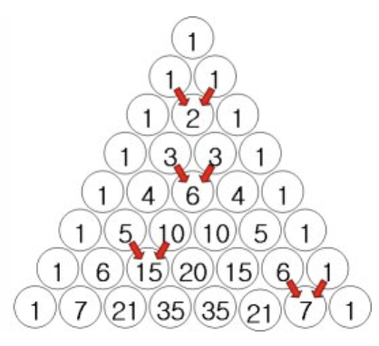
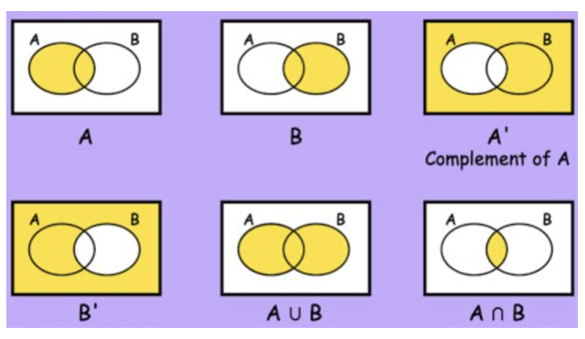
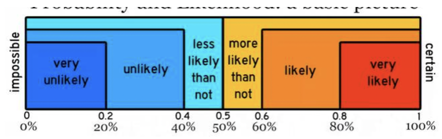
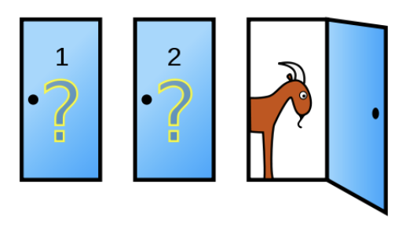
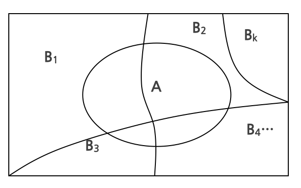
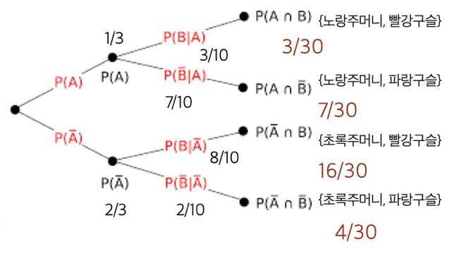
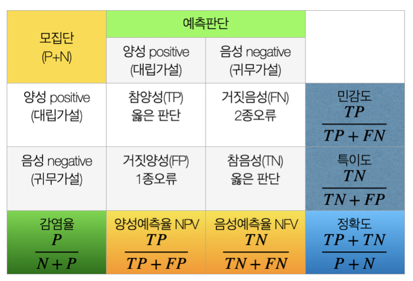

수리 통계 1. 확률
chapter 1. 집합론
1. 확률론이란?
파스칼의 삼각형은 숫자를 삼각형 모양으로 배열하여 이항 계수를 나타내는 도형이다. 각 행의 숫자는 조합의 개수를 의미하며, 위에서부터 차례로 0행, 1행, 2행 등으로 번호를 매긴다. 특정 행의 각 항은 바로 위 행의 두 항을 더한 값으로 계산된다.
이 삼각형은 프랑스의 수학자 블레즈 파스칼의 이름을 따서 불리지만, 그 기원은 훨씬 이전으로 거슬러 올라간다. 인도, 중국, 페르시아 등 여러 고대 문명에서도 이미 유사한 형태의 삼각형이 사용되었으며, 특히 중국에서는 ’양휘삼각형’이라는 이름으로 알려져 있다.
오늘날 파스칼의 삼각형은 조합론, 확률론, 수열의 성질 분석 등 다양한 수학 분야에서 핵심적인 도구로 활용된다.

이항전개 계수 : \((a + b)^{n} = \overset{n}{\sum_{k = 0}}\binom{n}{k}a^{n - k}b^{k}\)
\[(a + b)^{4} = a^{4} + 4a^{3}b + 6a^{2}b^{2} + 4ab^{3} + b^{4}\]
\(11^{n}\)의 값: \(11^{3} = 1331\)
7전 4선승제로 진행되는 경기에서 두 선수의 실력이 동등하다고 가정할 때, 현재 A는 1승, B는 2승을 거둔 상태에서 경기가 종료되었다고 하자. 이 경우, 남은 경기에서 A는 3번, B는 2번을 추가로 이겨야 승리할 수 있었던 상황이다.
이러한 조건에서 상금을 공정하게 배분하려면, 이후 가능한 모든 경기 결과의 경우의 수를 고려해야 한다. 이는 파스칼의 삼각형에서 5번째 행(즉, 5개의 경기가 남은 경우)에 해당하며, 그 합은 16이다.
이 중 A가 3승을 먼저 달성하는 경우는 앞쪽 2개의 항(즉, A가 이기는 모든 경우)에 해당하며, 그 합은 5이다. 반대로 B가 2승을 추가하여 먼저 4승을 달성하는 경우는 뒤쪽 3개의 항의 합이며, 이는 11이다.
따라서 A는 상금의 5/16, B는 11/16을 받는 것이 확률적으로 공정한 분배가 된다.
2. 표본공간과 사건
통계분석의 주요 목표 중 하나는 실험이나 관찰을 통해 특정 집단에 대한 합리적인 결론을 도출하는 데 있다. 이를 위해서는 먼저 실험이나 조사를 통해 얻을 수 있는 모든 가능한 결과의 집합, 즉 표본공간을 명확히 정의하는 것이 출발점이다. 표본공간을 식별함으로써 분석의 범위와 확률적 판단의 기반이 설정되며, 이후의 데이터 해석과 추론이 체계적으로 이루어질 수 있다.
(1) 표본공간 정의
【표본공간 정의】 표본공간(sample space)은 통계 실험 또는 관찰에서 발생할 수 있는 모든 가능한 결과의 집합을 의미하며, 일반적으로 \(S\)로 표기한다.
실험이 동전을 던지는 것으로 구성되어 있다면, 표본공간은 앞면과 뒷면의 두 가지 결과를 포함한다. 따라서, \(S = \{ H,T\}\)
실험이 특정 대학에서 무작위로 선택된 학생들의 수능 점수를 관찰하는 것이라면, 표본공간은 \(S = \{ 100,110,...,505\}\)(10점 단위)이다.
특정 자극에 대한 반응 시간을 관찰하는 실험에서는 \(S = (0,\infty)\)가 표본공간이다.
(2) 표본공간의 유형
표본공간은 그 안에 포함된 원소의 개수에 따라 가산 표본공간(countable sample space)과 비가산 표본공간(uncountable sample space)으로 구분된다.
표본공간의 원소가 정수 집합의 부분집합과 1:1 대응을 이룰 수 있으면, 그 표본공간은 가산이다. 예를 들어, 동전 던지기나 SAT 점수의 표본공간은 가산 표본공간이다(사실, 유한한 집합이다)
반응 시간 표본공간은 비가산 표본공간이다. 이는 양의 실수들이 정수와 1:1 대응을 이룰 수 없기 때문이다. 하지만 반응 시간을 가장 가까운 초 단위로 측정한다면, 표본공간은 다음과 같이 표현될 수 있다. \(S = \{ 0,1,2,3,\ldots\}\)
이러한 구분은 확률의 정의 방식과 수학적 모델링에 중요한 영향을 미친다.
(3) 사건
【사건 정의】 사건(event)이란 실험에서 발생 가능한 결과들의 모임, 즉 표본공간 \(S\)의 임의의 부분집합을 말한다. 표본공간, S 자체도 하나의 사건으로 포함된다.
어떤 사건 \(A\)가 표본공간 \(S\)의 부분집합이라고 하자. 이때 실험의 결과가 \(A\)에 속하면, 사건 \(A\)가 발생했다고 말한다. 확률을 논의할 때는 개별 결과보다는 사건 전체에 대한 확률을 다루는 경우가 많으며, 이때 사건과 그에 대응하는 집합은 상호 교환적으로 사용된다. 즉, 사건의 확률을 말하는 것은 해당 부분집합에 속하는 결과가 나올 확률을 의미한다.
포함 관계, 부분집합: \(A \subseteq B \Longleftrightarrow x \in A \Longrightarrow x \in B\)
동일성: \(A = B \Longleftrightarrow A \subseteq B\text{and}B \subseteq A\)
3. 집합연산
집합 \(A\)의 모든 원소를 셀 수 있다면 가산 countable 집합이다.
만약 집합 \(A\)의 모든 원소가 집합 \(B\)에 포함되어 있다면 \(A\)는 \(B\)의 부분 subset 집합이다.
\(\phi\)는 공집합(null or empty set)을 의미하며 원소가 하나도 없는 집합이다.
\(A \subset B\) : 집합 A의 모든 원소가 집합 B에 있는 경우 집합 A는 집합 B의 부분집합 subset
\(A^{C}or\overline{A}\) : 집합 A의 여집합 complement로 집합 A에 있는 원소를 제외한 모든 표본공간 원소의 모임 ⇔ NOT

어떤 두 사건 A와 B가 주어졌을 때, 다음과 같은 기본적인 집합 연산이 성립한다:
\(A \cup B\) 합집합 union: A 또는 B 또는 둘 다에 속하는 원소들로 구성된 집합이다. \(A \cup B = \{ x:x \in A\text{또는}x \in B\}\)
\(A \cap B\) 교집합 intersection: A와 B 모두에 속하는 원소들로 구성된 집합이다. \(A \cap B = \{ x:x \in A\text{그리고}x \in B\}\)
표본공간 \(S\)에서 정의된 임의의 세 사건 \(A,B,C\)에 대해 다음이 성립합니다.
정리
교환법칙 commutativity: \(A \cup B = B \cup A\), \(A \cap B = B \cap A\)
결합법칙 associativity: \(A \cup (B \cup C) = (A \cup B) \cup C\),\(A \cap (B \cap C) = (A \cap B) \cap C\)
분배법칙 distributive Laws: \(A \cap (B \cup C) = (A \cap B) \cup (A \cap C)\), \(A \cup (B \cap C) = (A \cup B) \cap (A \cup C)\)
드모르간 법칙 DeMorgan’s Laws: \((A \cup B)^{c} = A^{c} \cap B^{c}\), \((A \cap B)^{c} = A^{c} \cup B^{c}\)

만약 \(A_{1},A_{2},A_{3},\ldots\)가 표본공간 \(S\)위에 정의된 집합이라면,
\(\overset{\infty}{\bigcup_{i = 1}}A_{i} = \{ x \in S:x \in A_{i}\text{for some}i\}\): 무한 합집합을 나타내며 \(x\)는 \(A_{i}\) 중 적어도 하나의 집합에 포함되면 합집합에 포함된다.
\(\overset{\infty}{\bigcap_{i = 1}}A_{i} = \{ x \in S:x \in A_{i}\text{for all}i\}\): 무한 교집합을 나타내며 \(x\)는 모든 \(A_{i}\) 포함되어야 교집합에 포함된다.
【예제】 주사위를 한번씩 두 번 던져 나타난 결과를 적는다. 모든 가능한 쌍(pair)을 표본공간이라 정의하자. 집합 A={두 번째 주사위 눈금이 짝수}, B={두 주사위 눈금의 합이 짝수}, C={두 주사위 눈금 중 적어도 하나가 홀수}라 정의할 때 다음을 구하라.
\(B^{C},A \cup B,A \cap B^{C},A^{C} \cap C\)
\(A = \{ 3,456,7,8,9,10,11\}\), \(B = \{ 2,4,6,8,10,12\}\), \(C = \{ 23,4,5,6,7,8,9,10,11\}\)
【풀이】 \(S = \{ 2,3,4,5,6,7,8,9,10,11,12\}\), \(A^{c} = \{ 2,12\}\), \(B^{c} = \{ 3,5,7,9,11\}\), \(A \cup B = \left\{ 2,3,4,5,6,7,8,9,10,11,12 \right\} = S\), \(A \cap B^{c} = \{ 3,5,7,9,11\}\), \(A^{C} \cap C = \{ 2\}\).
4. 상호 배타적 사건
만약 \(A \cap B = \varnothing\)이면, 두 사건 A와 B는 서로소 disjoint, 또는 상호 배타적 mutually exclusive 라고 한다.
【상호배타 정의】 만약 \(A_{i} \cap A_{j} = \varnothing foralli \neq j\)이면 사건 \(A_{1},A_{2},\ldots\)는 쌍별로 서로소 또는 상호 배타적라고 한다.
만약 \(A_{1},A_{2},\ldots\)가 쌍별로 서로소이고 \(\overset{\infty}{\bigcup_{i = 1}}A_{i} = S\)라면, 이 집합 모음 \(A_{1},A_{2},\ldots\)는 \(S\)의 분할 partition을 이룬다.
【유용한 사례】 집합 \(A_{i} = \lbrack i,i + 1)\)는 \(\lbrack 0,\infty)\)의 분할을 이룬다.
chapter 2. 확률론 기초
확률실험이 수행되면, 그 결과는 표본공간에 속하는 하나의 결과로 나타난다. 동일한 실험을 여러 번 반복하면 다양한 결과가 나타날 수 있으며, 특정 결과는 여러 번 반복되어 관찰될 수도 있다. 이때 결과의 발생 빈도는 확률의 개념으로 이해할 수 있다.
일반적으로 확률이 높은 결과는 더 자주 나타나는 경향이 있으며, 이러한 반복적 관찰을 통해 실험 결과를 확률적으로 설명할 수 있다면, 이는 곧 통계적 분석의 출발점이 된다. 이러한 과정은 실험 데이터로부터 의미 있는 결론을 도출하는 데 중요한 기초를 이룬다.
확률 실험(probability experiment)이란 특정 조건 하에서 수행되며, 그 결과가 미리 확정되어 있지 않은 실험을 의미한다. 이러한 실험은 불확정성, 반복 가능성, 그리고 확률적 설명 가능성이라는 세 가지 특징을 갖는다.
확률 실험은 동일한 조건에서 여러 번 반복 수행될 수 있으며, 각 실험의 결과는 표본공간의 원소로 나타난다. 예를 들어, 주사위를 던지거나 동전을 던지는 실험은 확률 실험의 대표적인 예로, 결과는 사전에 예측할 수 없지만 반복을 통해 통계적 규칙성을 관찰할 수 있다.
확률이란 미래에 발생할 수 있는 사건에 대한 믿음 또는 기대 정도를 수치로 나타낸 측정값이다. 이는 물리, 화학, 생물학, 사회과학 등 다양한 분야에서 관찰되는 관심 현상이 불확실성으로 인해 정확하게 예측될 수 없는 상황에서 활용된다.
예를 들어, 향후 1분 동안의 심박수, 다리가 무너지기 직전의 최대 하중, 또는 주식 시장의 등락과 같은 현상은 정확한 값을 사전에 알 수 없다. 이러한 상황을 랜덤 상황(random situation)이라고 하며, 결과가 우연에 의해 결정되는 특성을 가진다. 그러나 비록 개별 결과는 불확실하더라도, 충분히 많은 반복 관찰을 통해 얻은 상대 빈도 정보가 있다면 사건 발생의 가능성을 확률로 추정할 수 있다.
확률은 관심 사건이 일어날 가능성(chance or likelihood)을 0과 1 사이의 숫자로 표현한다. 확률이 0이면 해당 사건은 절대로 발생하지 않음을 의미하고,확률이 1이면 항상 발생함을 뜻한다. 일반적으로 확률은 0에서 1 사이의 값으로 주어지며, 0%에서 100%까지의 비율로 해석할 수도 있다.
결국 확률은 불확실성을 수치화하여 미래를 예측하고 의사결정을 도울 수 있도록 하는 도구라 할 수 있다.
1. 확률 측정
확률은 관심 사건이 일어날 가능성 chance or likelihood을 숫자로 표현한 것으로 확률의 0 (일어날 가능성 없음)과 1(항상 일어남) 사이의 값으로 나타낸다.
확률 정의

상대 빈도 relative frequency
동전을 던지는 경우 {앞 면이 나올 사건}에 관심이 있어 실험을 한다고 하자. 10번을 던지니 6번이 앞 면이었다면 상대빈도는 0.6이다. 계속 100번 던지니 52번이 앞 면이 나왔다면 상대 빈도는 0.52이다. 1000번을 던지니 515번이 앞면이었다면 상대 빈도는 0.515이다.
이처럼 실험 횟수가 증가할수록 상대빈도는 점차 일정한 값에 수렴해 가는 경향을 보이며, 이 수렴하는 값이 바로 해당 사건의 확률이라고 할 수 있다. 이러한 현상은 법칙적 경향성 또는 큰 수의 법칙(Law of Large Numbers)을 통해 설명된다.
\(P(A) = \lim_{n \rightarrow \infty}\frac{f}{n}\), \(n\)=실험 횟수, \(f\)=사건 A가 발생한 횟수, 무한히 많은 시행 후에는 관심 사건의 나타날 가능성을 예상-확률은 무한 실험 후에 관심사건이 발생한 횟수(상대 빈도)를 확률이라 정의한다.
Count Buffon (1707-1788): 4040번 동전 던지기 실험 앞면 2048회, P(앞면)= 0.5069
Karl Pearson (1900): 24, 000 던지기 앞면 12,012, P(앞면)=0.5005
John Kerrich : 10,000 던지기, 앞면 5067 heads, P(앞면)=0.5067.
예 : 공정 생산 제품의 불량률(확률)에 대한 모형을 위해서는 제품 검사(확률실험)를 통하여 검사 제품 개수 중 불량품의 개수(상대 빈도)를 계산하면 된다.
Laplace 확률
표본공간의 각 원소들이 일어날 가능성이 같다고 가정하고 확률을 정의하는 방식을 라플라스 확률(Laplace probability) 또는 고전적 확률의 정의라고 한다.
예를 들어, 주사위를 던지는 실험에서 짝수가 나올 확률은 다음과 같이 계산된다. 표본공간의 원소 개수는 총 6개이며, 그 중 짝수(2, 4, 6)에 해당하는 원소는 3개이다. 따라서 짝수가 나올 확률은 \(\frac{3}{6} = 0.5\) 이다.
이 정의는 각 원소(주사위 눈금 1~6)가 동일한 확률, 즉 \(\frac{1}{6}\) 의 확률로 발생한다는 균등가능성(equally likely)을 전제로 한다.
고전적 정의는 단순하고 직관적이며, 다음에서 소개할 공리적 기반의 확률 정의와 동일한 수학적 구조를 갖는다. 다만 고전적 정의는 모든 결과가 동등하게 가능하다는 이상적인 가정에 의존한다는 점에서, 현실의 복잡한 확률 현상을 설명하는 데에는 한계가 있다.
공리적기반
표본공간 \(S\) 내의 사건 \(A\)에 대해, \(A\)에 0과 1 사이의 숫자를 대응시키고 이를 \(A\)의 확률(probability)이라 하며, 보통 \(P(A)\)로 표기한다. 이때 \(P\)는 사건에 확률을 부여하는 함수로 이해된다.
자연스럽게, \(P\) 함수의 정의역은 \(S\)의 모든 부분집합으로 확장하는 것이 바람직해 보인다. 즉, \(A \subseteq S\)인 모든 사건에 대해 \(P(A)\)를 정의할 수 있어야 한다.
그러나 수학적으로 엄밀한 확률 이론을 구축하기 위해서는, \(S\)의 모든 부분집합에 대해 확률을 정의하는 것이 항상 가능하지 않다. 따라서 확률이 정의되는 사건의 집합, 즉 \(P\)의 정의역으로 적절한 부분집합들의 모음 \(\mathcal{B}\)를 선정해야 하며, 이 \(\mathcal{B}\)가 다음 세 가지 조건을 만족하면 이를 시그마 대수(sigma algebra) 또는 보렐 필드(Borel field)라고 한다.
시그마 필드
\(\varnothing \in \mathcal{B}\) (공집합은 \(\mathcal{B}\)에 포함된다).
\(A \in \mathcal{B}\)라면 \(A^{c} \in \mathcal{B}\) (보수 연산에 대해 닫혀 있다).
\(A_{1},A_{2},\ldots \in \mathcal{B}\)라면 \(\overset{\infty}{\bigcup_{i = 1}}A_{i} \in \mathcal{B}\) (가산 합집합에 대해 닫혀 있다).
가장 간단한 시그마 대수는 \(\{\varnothing,S\}\) 이다.
표본공간 \(S\)와 이에 연관된 시그마 대수 \(\mathcal{B}\)가 주어졌을 때, 확률함수 \(P\)는 다음 세 가지 조건을 만족하는 \(\mathcal{B}\) 상의 함수이다.
확률함수 정의
비음성 조건: \(P(A) \geq 0\text{for all}A \in \mathcal{B}\). (모든 사건 A 에 대해 확률은 0 이상이다.)
정규화 조건: \(P(S) = 1\). (전체 표본 공간 S 의 확률은 항상 1이다.)
가산 가법성 조건: 만약 \(A_{1},A_{2},\ldots \in \mathcal{B}\)가 쌍별로 상호배타적이라면, \(P\left( \bigcup_{i = 1}^{\infty}A_{i} \right) = \overset{\infty}{\sum_{i = 1}}P(A_{i})\). (가산 합집합의 확률은 개별 사건들의 확률 합과 같습니다.)
위 정의는 Kolmogorov 공리로 잘 알려져 있습니다. 이 공리적 정의는 확률을 직관적으로 정의하려는 시도(예: 빈도적 정의)와 달리, 수학적으로 엄격하고 보편적인 방식으로 확률을 설명합니다. 이 공리를 만족하는 함수는 모두 확률 함수로 간주된다.
확률 공간 probability space: 확률함수는 \((S,\mathcal{B},P)\)로 정의되는 확률 공간의 일부입니다. 여기서 \(S\)는 표본 공간, \(\mathcal{B}\)는 사건의 집합(시그마 대수), \(P\)는 확률 함수입니다.
확률 함수의 다양성: 동일한 표본 공간에서도 여러 가지 확률 함수가 정의될 수 있습니다. 예를 들어, 공정한 동전과 편향된 동전은 서로 다른 확률 함수를 가질 수 있습니다.
2. 확률정의 방법
(1) 확률정의 방법
\[S = \{\text{앞면, 뒷면}\},\mathcal{B} = \{ S,\varnothing,\{\text{앞면}\},\{\text{뒷면}\}\},P(\{\text{앞면}\}) = 0.5\]
표본공간: 공정한 동전을 던지는 실험 \(S = \{\text{H},\text{T}\}\)
공정한 동전의 정의: 공정한 동전은 앞면과 뒷면이 나올 확률이 동일한 동전을 의미합니다. 따라서 \(P(\{\text{H}\}) = P(\{\text{T}\})\).
이 관계는 직관에 의해 설정된 것이며 Kolmogorov 공리에서 직접적으로 도출된 것은 아니다.
【Kolmogorov 공리 적용】 Kolmogorov 공리에 따라, 표본 공간 S 의 확률은 \(P(S) = 1\).
\(S = \{\text{H}\} \cup \{\text{T}\}\)이고, 앞면과 뒷면은 상호배타적이므로, 가산 가법성에 의해 \(P(\{\text{H}\} \cup \{\text{T}\}) = P(\{\text{H}\}) + P(\{\text{T}\})\).
이를 통해 \(P(\{\text{H}\}) + P(\{\text{T}\}) = 1\)이 성립합니다.
【결론】 앞면과 뒷면의 확률이 동일하므로 \(P(\{\text{H}\}) = P(\{\text{T}\}) = 0.5\).
다음 정리는 확률함수 \(P\)를 정의하는 구체적인 방법을 설명합니다. 이 정리는 유한 또는 가산 표본 공간에서 Kolmogorov 공리를 만족하는 확률함수를 체계적으로 정의하는 데 사용됩니다.
【정리】 주어진 조건:
- 표본공간 \(S = \{ s_{1},s_{2},\ldots,s_{n}\}\)는 유한 집합이다.
- \(\mathcal{B}\)는 \(S\)의 부분집합들로 이루어진 시그마 대수이다.
- \(p_{1},p_{2},\ldots,p_{n}\)은 0 이상의 숫자로 이들의 합은 1이다 \(\overset{n}{\sum_{i = 1}}p_{i} = 1\).
\(A \in \mathcal{B}\)에 대해 확률 함수 P(A) 는 다음과 같이 정의된다. \[P(A) = \sum_{\{ i:s_{i} \in A\}}p_{i}\]
공집합에 대한 합은 0으로 정의됩니다. \(P(\varnothing) = 0\).
가산 집합 확장: \(S = \{ s_{1},s_{2},\ldots\}\)가 가산 집합인 경우에도 위 방식으로 \(P\)를 정의할 수 있습니다. 이 경우에도 Kolmogorov 공리를 만족합니다.
(2) 확률정의 방법
다트 게임을 통해 확률을 정의하는 방법으로 표본공간에서 영역의 크기에 비례하여 확률을 정의하는 방법을 보여준다.
【문제 설정】
다트 게임에서는 다트를 던져 특정 영역에 맞추었을 때, 그 영역에 해당하는 점수를 얻는다.
초보 플레이어를 대상으로, 다트가 특정 영역에 맞을 확률이 영역의 면적에 비례한다고 가정한다.
따라서, 더 큰 영역은 맞을 확률이 더 높다.
【가정】
다트 보드의 반지름은 \(r\)이다.
다트 보드에는 여러 개의 원형 영역이 있으며, 각 영역의 반지름은 일정 간격으로 나뉜다.
다트가 반드시 보드에 맞는다고 가정한다.
【특정점수 \(i\)를 얻을 확률】
\(P(\text{scoring}i\text{points}) = \frac{\text{Area of region}i}{\text{Area of dart board}}\).
【계산 과정】
- 점수 1을 얻을 확률: 영역 1은 중심 영역으로, 면적은 보드 전체 면적에서 두 번째 원까지의 영역을 뺀 값이다.
\[P(\text{scoring 1 point}) = \frac{\pi r^{2} - \pi(4r/5)^{2}}{\pi r^{2}} = 1 - \left( \frac{4}{5} \right)^{2}\]
- 영역 i 의 면적은 두 원 사이의 차이로 계산된다.
\[P(\text{scoring}i\text{points}) = \frac{(6 - i)^{2} - (5 - i)^{2}}{5^{2}},i = 1,2,\ldots,5\]
【특징】
\(\pi\)와 \(r\)은 최종 확률 계산에서 상쇄되므로, 확률은 반지름과 독립적이다.
각 영역의 면적 합이 전체 보드 면적과 같으므로, 확률의 총합은 1이 된다.
이 정의는 위 정리에 의해 올바른 확률 함수로 간주된다.
chapter 3. 확률 계산
1. 확률계산 관련 정리
확률의 공리적 정의를 바탕으로 확률 함수의 다양한 성질을 유도할 수 있으며, 이러한 성질들은 복잡한 확률 계산에 효과적으로 활용된다. 특히, 이 성질들은 단일 사건뿐만 아니라 여러 사건의 결합 또는 조건부 관계에서 발생하는 확률을 계산하는 데 핵심적인 역할을 한다.
\(P\)가 확률 함수이고 \(A\)가 \(\mathcal{B}\)에 속하는 임의의 집합일 때, 다음이 성립한다.
【정리 ①】
\(P(\varnothing) = 0\): 공집합의 확률은 항상 0입니다. 이는 직관적으로 공집합에는 발생할 수 있는 사건이 없기 때문입니다.
\(P(A) \leq 1\): 임의 사건 \(A\)의 확률은 1을 초과할 수 없습니다. 이는 확률이 0에서 1 사이에 있어야 한다는 공리에서 유도됩니다.
\(P(A^{c}) = 1 - P(A)\): 여집합의 확률은 A 의 확률을 전체 확률1에서 뺀 값입니다.
\(P\)가 확률 함수이고, A 와 B가 \(\mathcal{B}\)에 속하는 임의의 집합일 때, 다음이 성립합니다.
【정리 ②】
\(P(B \cap A^{c}) = P(B) - P(A \cap B)\).
\(P(A \cup B) = P(A) + P(B) - P(A \cap B)\).
\(A \subseteq B\)라면 \(P(A) \leq P(B)\).
\(P(A \cup B) \leq 1\) 이므로 정리 ②-2를 다음과 쓸 수 있다.
Bonferroni’s Inequality: \(P(A \cap B) \geq P(A) + P(B) - 1\)
\(P\)가 확률 함수이고, A 와 B가 \(\mathcal{B}\)에 속하는 임의의 집합일 때, 다음이 성립합니다.
【정리】
- \(P(A) = \overset{\infty}{\sum_{i = 1}}P(A \cap C_{i})\), 각 \(C_{i}\)는 상호배타적이고 \(\overset{\infty}{\bigcup_{i = 1}}C_{i} = S\).
- (Boole’s Inequality) \(P\left( \bigcup_{i = 1}^{\infty}A_{i} \right) \leq \overset{\infty}{\sum_{i = 1}}P(A_{i})\), 모든 \(A_{i}\)는 임의의 집합입니다.
2. 확률계산 방법
sample-point 방법
이산형(표본공간의 원소의 수가 한정적일 경우, 헤아릴 수 있는 경우) 확률실험에서 사건 A에 대한 확률 계산 방법이다.
실험을 정의하고 표본공간을 정의한다. 표본공간의 원소 개수(\(N\))를 카운트한다.
표본공간의 각 원소에 확률 공리를 만족하도록 하여 적절한 확률 값을 할당한다. 라플라스 동등성 가정에 의해 각 원소의 활당 확률은 \(1/N\) 이다.
사건A에 대한 원소를 정의하고 원소의 개수(n)를 카운트 한다.
사건 A의 원소들의 확률을 더해 사건 A의 확률로 정의한다. \(P(A)=n/N\)
곱의 법칙
r번의 실험, 각 실험의 결과 수를 \(n_1, n_2, ..., n_r\) 이라 하면 실험 전체 결과 수는 \(n_1 \times n_2 \times ... \times n_r\) 이다.
【예제】 컴퓨터 비번을 만들려고 한다. 총 7자리 중 첫 2자리는 소문자, 3번째는 대문자, 남은 4자리는 0~9까지 숫자로 나열하여 만들 때 총 비번 개수는? \(26 \times 26 \times 26 \times 10^{4}\)
반복있고 순서 고려
실험의 결과 수가 n이고 실험을 r번 반복할 때 나타날 수 있는 결과(경우) 수는 \(n^r\) 이다.
4자리로 숫자로 구성된 비밀번호을 잊었다. 반복이 가능하다면, 최악의 경우 몇 번이나 시도해야 맞출 수 있나? \(10^{4}\)
반복없이 나열
실험의 결과 수가 n인 경우 이를 나열하여 만들 수 있는 총 결과 수는 \(n! = n \times (n - 1) \times ... \times 1\) 이다.
【예제】 4자리로 숫자로 구성된 비밀번호을 잊었다. 첫 번호에 0을 사용할 수 없고 반복이 불가능하다면, 최악의 경우 몇 번이나 시도해야 맞출 수 있나? \(9 \times 9 \times 8 \times 7\)
반복없고 순서 고려
n개의 서로 다른 원소들 중 r개를 뽑아 순서대로 배열할 경우 발생하는 총 결과 수는 \(nP_{r} = \frac{n!}{(n - r)!}\) 이다.
【예제】 4자리로 숫자로 구성된 비밀번호을 잊었다. 반복이 불가능하다면, 최악의 경우 몇 번이나 시도해야 맞출 수 있나? \({}_{10}P_{4} = 10 \times 9 \times 8 \times 7\)
【예제】 주머니에 6개의 칩이 있거 칩에는 E, E, P, P, P, R이 각각 적혀있다. (1) 복원 추출(with replacement) (2) 비복원 추출(without replacement)로 하나씩 차례로 6개를 뽑아 영어 단어 PEPPER를 만들 확률을 구하시오. \((1)P(\text{“PEPPER”}) = \frac{1}{2} \times \frac{1}{3} \times \frac{1}{2} \times \frac{1}{2} \times \frac{1}{3} \times \frac{1}{6}\)
\((2)\frac{6!}{3! \times 2! \times 1!} = \frac{720}{6 \times 2 \times 1} = 60\) /720=1/12
반복, 순서 모두 없는 경우
n개의 서로 다른 원소들 중 r개를 뽑아 순서없이 배열할 경우 발생하는 총 결과 수 \({}_{n}C_{r} = \frac{n!}{(n - r)!r!}\) 이다.
【예제】 5명의 대학원생과 3명의 학부생이 공무원 시험에 응시하였다. 여기서 4명을 선발할 경우 대학원 생이 3명 포함되어 있을 확률을 구하시오. \(\frac{{}_{5}C_{3} \times_{3}C_{1}}{{}_{8}C_{4}}\)
Enumerating Outcomes
유한 표본공간에서 가능한 결과를 나열하고, 이를 통해 확률을 계산하는 방법이다.
유한 표본공간 \(S = \{ s_{1},s_{2},\ldots,s_{N}\}\)을 정의한다.
각 결과 \(s_{j}\)의 발생 가능성은 동일하다. \(P(s_{j}) = \frac{1}{N}\)
사건 A 의 확률 계산: \(P(A) = \sum_{s_{i} \in A}P(\{ s_{i}\}) = \sum_{s_{i} \in A}\frac{1}{N}\) 이는 사건 A 에 속한 원소의 개수를 전체 표본 공간의 원소 수로 나눈 값과 같습니다. \(P(A) = \frac{\text{no. of elements in}A}{\text{no. of elements in}S}\).
chapter 4. 조건부 확률과 독립
1. 조건부 확률
만약 사건 A 와 B는 표본공간 \(S\)에서 정의되고 \(P(B) > 0\)이라면, B가 발생했을 때 A가 발생할 조건부 확률은 다음과 같이 정의된다. \(P(A|B) = \frac{P(A \cap B)}{P(B)}\)
조건부 확률 정의
【재표현】 \(P(A \cap B) = P(A|B)P(B)\)
조건부 확률은 사건 B가 발생했다고 가정하므로 B가 새로운 표본 공간 역할을 합니다. 상호 배타적인 사건 A와 B는 공통된 원소를 가지지 않으므로 조건부 확률은 0입니다.
【예제】 잘 섞인 52장의 카드 중에서 4장을 뽑을 때, 뽑은 4장이 모두 에이스일 확률을 계산 하시오.
(방법1) \(P(\text{4 aces}) = 1/\binom{52}{4}\)
(방법2) \(P(\text{4 aces}) = \frac{4}{52} \times \frac{3}{51} \times \frac{2}{50} \times \frac{1}{49} = \frac{1}{270,725}\)
【예제】 뽑힌 \(i\) 장 카드 중 에이스가 \(i\) 개 있다면, 뽑은 4장이 모두 에이스일 확률을 계산 하시오.
\[P(\text{4 aces in 4 cards | i aces in i cards}) = \frac{P(\text{4 aces in 4 cards})}{P(\text{i aces in i cards})}\]
\[P(\text{4 aces in 4 cards}) = 1/\binom{52}{4}\]
\[P(\text{i aces in i cards}) = \frac{\binom{4}{i}}{\binom{52}{i}}\]
\[P(\text{4 aces in 4 cards | i aces in i cards}) = \frac{\binom{52}{i} \cdot \binom{4}{4}}{\binom{52}{4} \cdot \binom{4}{i}} = \frac{1}{\binom{52 - i}{4 - i}}\]
【Monte Hall Show】 몬티 홀 딜레마는 미국 TV 게임쇼 Make a Deal”에서 유래한 퀴즈 게임으로, 진행자 몬티 홀의 이름을 따왔습니다. 이 게임에서 참가자는 세 개의 문 중 하나를 선택해, 문 뒤에 숨겨진 선물을 받을 기회를 갖습니다. 세 문 중 하나 뒤에는 자동차가, 나머지 두 문 뒤에는 염소가 있습니다.
예를 들어, 한 참가자가 1번 문을 선택했다고 가정해봅시다. 이때 진행자는 3번 문을 열어 염소가 있음을 보여준 후, 참가자에게 처음 선택한 1번 문 대신 2번 문으로 바꿀 기회를 제안합니다. 이 상황에서, 참가자가 자동차를 받을 확률을 최대화하려면 처음 선택을 유지하는 것이 좋을까요, 아니면 선택을 바꾸는 것이 유리할까요? 몬티 홀 문제는 이러한 질문을 통해 선택의 전략과 확률을 탐구하는 흥미로운 사례로, 단순한 직관에 반하는 결과를 보여줍니다.

선택을 바꾸지 않을 경우 자동차에 당첨될 확률은 \(\frac{1}{3}\)이지만, 선택을 바꿀 경우 확률은 \(\frac{2}{3}\)로 증가합니다. 그럼에도 불구하고, 대부분의 참가자는 처음 선택을 고수하는 경향을 보입니다. 이는 인간이 항상 합리적 선택을 한다는 전통 경제학의 가정에 반하는 사례로, 몬티 홀 딜레마는 이러한 점에서 매우 유명합니다. 전통 경제학에 따르면 인간은 합리적이고 이성적인 존재로, 언제나 자신의 이익을 극대화하기 위해 행동한다고 가정합니다. 따라서 전통 경제학의 관점에서 보면, 몬티 홀 문제를 푸는 합리적인 인간은 선택을 바꾸는 것이 당연한 전략이 될 것입니다.
【죄수 3인의 딜레마】 세 명의 수감자 A, B, C는 각각 별도의 감방에 수감되어 사형을 선고받았고, 주지사는 이들 중 무작위로 한 명을 사면하기로 결정하였습니다. 소장은 누가 사면 대상인지 알고 있지만, 이를 직접적으로 밝힐 수는 없습니다.
이 상황에서, 수감자 A는 교도관에게 처형될 두 사람 중 한 사람의 이름을 알려달라고 요청합니다. A는 다음과 같은 제안을 합니다: ”B가 사면 대상이라면 C의 이름을, C가 사면 대상이라면 B의 이름을 알려주세요. 만약 제가 사면 대상이라면 동전을 던져 B 또는 C 중 하나의 이름을 알려주세요.” 이 요청에 따라 교도관은 A에게 B가 처형될 것이라고 말합니다.
이 말을 들은 A는 자신이 사면될 확률이 원래의 \(\frac{1}{3}\)에서 \(\frac{1}{2}\)로 높아졌다고 믿고 기뻐합니다. 반면, 수감자 C는 A와 다르게 자신이 사면될 확률이 \(\frac{2}{3}\)로 증가했다고 생각하며 안도합니다. 이 상황에서 누가 옳은 것일까요?
\[P(A|P) = \frac{P(AP)}{P(P)} = \frac{P(A)P(P|A)}{P(A)P(P|A) + P(B)P(P|B) + P(C)P(P|C)}\]
\(= \frac{1/3 \times 1/2}{1/3 \times 1/2 + 1/3 \times 0 + 1/3 \times 1} = 1/3\).
\[P(C|P) = \frac{P(CP)}{P(P)} = \frac{P(C)P(P|C)}{P(A)P(P|A) + P(B)P(P|B) + P(C)P(P|C)}\]
\(= \frac{1/3 \times 1}{1/3 \times 1/2 + 1/3 \times 0 + 1/3 \times 1} = 2/3\).
2. 독립
두 사건 A와 B가 독립적이면 아래와 같은 조건을 만족한다. \(P(A \cap B) = P(A)P(B\)
독립 정의
사건 \(E_{1},E_{2},{\ldots,E}_{k}\)가 다음 조건을 만족하면 서로 독립 mutually independent 이라 한다.
서로독립 정의
\[P(E_{1}E_{2}...E_{k}) = P(E_{1})P(E_{2})...P(E_{k})\]
【사례】 도박사 Chevalier de Meré가 던진 질문을 다룬다. 그는 주사위를 4번 던졌을 때, 최소한 한 번 ’6’이 나올 확률에 관심을 가졌다.
\[P(\text{at leat 1 six in 4 rolls}) = 1 - P(\text{no six in 4 rolls}) = 1 - (5/6)^{4}\]
【사례】 \(P(A) = 0.5,P(B) = 0.3,P(AB) = 0.1\)이다. 다음을 구하라.
\[P(A|B) = P(AB)/P(B) = 0.1/0.3 = 1/3\]
\[P(A|A \cup B) = \frac{P(A \cap (A \cup B))}{P(A \cup B)} = \frac{0.5}{0.5 + 0.3 - 0.1} = 5/7\]
\[P(A|A \cap B) = \frac{P(A \cap (A \cap B))}{P(A \cap B)} = \frac{0.1}{0.1} = 1\]
【사례】 \(P(A) > 0,P(B) > 0\)이고 사건 A, B는 상호 배반이다. 서로 독립인가? 증명하라.
【풀이】 상호 배반이면 \(A \cap B = \phi\)이므로 \(P(A \cap B) = 0\)이므로 독립\((P(AB) \neq P(A)P(B))\)은 아니다.
【사례】 만약 \(P(A) > 0,P(B) > 0\), \(P(A) < P(A|B)\)이면 \(P(B) < P(B|A)\)임을 증명하라.
【풀이】 \(P(A) < \frac{P(AB)}{P(B)}\)이므로 \(P(A)P(B) < P(AB)\)이다. 그러므로 \(P(B) < P(AB)/P(A) = P(B|A)\)이다.
【사례】 두 사건 A, B는 서로 독립이다. 사건 \(A,B^{c}\)는 서로 독립인가?
【풀이】 두 사건 A, B는 서로 독립이면 \(P(AB) = P(A)P(B)\), \(P(AB^{C}) = P(A) - P(AB) = P(A) - P(A)P(B) = P(A)(1 - P(B)) = P(A)P(B^{C})\)이므로 독립이다.
동일한 방법으로 \((A^{c},B^{c}),(A^{c},B)\)도 독립임을 보일 수 있다.
【사례】 동전을 세 번 던지는 실험의 표본공간은 다음과 같다.\(S = \{ HHH,HHT,HTH,THH,TTH,THT,HTT,TTT\}\)사건 \(H_{i},i = 1,2,3\)를 “i번째 던짐에서 앞면이 나오는 사건”으로 정의한다면 \(H_{i}\)는 서로 독립이다.
chapter 5. 베이즈 확률
베이즈 규칙(Bayes’ rule)은 영국의 수학자이자 장로교 목사였던 토머스 베이즈(Thomas Bayes, 1702–1761)가 발견한 확률 이론의 핵심 정리이다. 그는 생전에 이를 발표하지 않았지만, 사후에 동료였던 리처드 프라이스(Richard Price)가 베이즈의 미완성 원고를 정리하여, “An Essay Towards Solving a Problem in the Doctrine of Chances” 라는 제목으로 1763년에 왕립학회에 발표하였다.
이 논문에서 베이즈는 관측된 증거에 근거하여 어떤 사건의 확률을 갱신하는 방법, 즉 사전 확률(prior probability)과 조건부 확률을 통해 사후 확률(posterior probability)을 계산하는 공식을 처음 제시하였다. 이후 이 정리는 베이즈 정리(Bayes’ theorem)로 불리며, 통계학, 기계 학습, 의학, 법학 등 다양한 분야에서 불확실한 정보를 체계적으로 업데이트하는 도구로 널리 활용되고 있다.
토머스 베이즈는 확률 이론을 활용하여, 어떤 결과가 관측되었을 때 그것이 어떤 원인에 의해 발생했는지를 추론하는 문제를 해결하고자 했다. 그의 연구는 두 가지 핵심적인 방향으로 전개되었으며, 이는 오늘날 베이즈 통계학의 이론적 기초를 형성한다.
역추론 문제 (Inverse Inference): 베이즈는 특정 결과가 관측되었을 때, 그 결과를 유발한 원인을 역으로 추정하는 방법을 연구했다. 이는 단순히 결과에서 확률을 계산하는 것이 아니라, 주어진 데이터를 바탕으로 사건의 사전 확률(prior probability)을 사후 확률(posterior probability)로 업데이트하는 과정이다. 이 접근은 오늘날 베이즈 추론의 중심 개념으로 자리잡았다.
불확실한 상황에서의 의사결정: 베이즈는 불확실한 조건하에서 사건이 발생할 가능성을 계산하고, 추가적인 정보가 주어졌을 때 확률을 어떻게 갱신할 수 있는지에 관심을 가졌다. 이러한 사고 방식은 정보가 축적됨에 따라 확률을 동적으로 갱신하며, 더 나은 의사결정을 가능하게 한다. 이는 베이즈 정리가 단순한 수학 공식을 넘어서, 학습과 판단의 원리로 기능하게 되는 이유이기도 하다.
1. 전확률 법칙
\(S = \bigcup_{i = 1}^{k}B_{i},B_{i}B_{j} = \phi fori \neq j,P\left( B_{i} \right) > 0\), 즉 \(B_{1},B_{2},\ldots,B_{k}\) 상호 배타적 합이 표본공간인 mutually exclusive and collectively exhausted 사건이라 하자. 임의의 사건 \(A\)에 대하여 다음이 성립하는데 이를 전확률 법칙이라 한다.
\[P(A) = \sum_{i = 1}^{k}{P(AB_{i})} = \sum_{i = 1}^{k}{P(B_{i})P({A|B}_{i})}\]

2. 베이지 규칙 Bayes Rule
영국 철학자 Thomas Bayes의 이름에서 유래된 것으로 사건 H(가설)의 확률을 새로운 사건 D(데이터)에 의해 조건부 확률을 계산하는 개념이다. \(P\left( H \middle| D \right) = \frac{P(D|H)P(H)}{P(D)}\).
\(B_{1},B_{2},\ldots,B_{k}\) 상호 배타적 합이 표본공간인 mutually exclusive and collectively exhausted 사건인 경우 다음이 성립하는데 이를 베이지 규칙이라 한다.
\[P\left( B_{j} \middle| A \right) = \frac{P(B_{j}A)}{P(A)} = \frac{P\left( B_{j} \right)P(A|B_{j})}{\sum_{i = 1}^{k}{P\left( B_{i} \right)P(A|B_{i})}}\]
【예제】 노랑 주머니에는 3개 빨강 구슬, 7개 파랑 구슬이 있고 초록 주머니에는 8개 빨강 구슬, 2개 파랑 구슬이 있다. 주사위를 굴려 5 이상 수가 나오면 노랑 주머니에서 4이하 수가 나오면 초록 주머니에서 구슬을 뽑는다고 하자. 뽑은 구슬이 빨강이었다면 그 구슬이 노랑 주머니에서 나왔을 확률은? (답) 1/3

3. 특이도와 민감도

민감도 sensitivity : 양성(감염)을 양성으로 진단할 확률, 실제 양성 중에서 모델이 양성으로 올바르게 예측한 비율.
특이도 specificity : 음성(정상)을 음성으로 진단할 확률
양성 예측율 positive predicted Value, 정밀도 precision: 양성 진단자 중 참 양성 확률, 실제 음성 중에서 모델이 음성으로 올바르게 예측한 비율.
음성 예측율 negative predicted Value : 음성 진단자 중 참 음성 확률
감염율 prevalence : 전체 검사자 중 양성 비율
정확도 accuracy : 전체 예측 중에서 올바르게 예측한 비율
\(\text{F1 Score} = 2 \cdot \frac{\text{Precision} \cdot \text{Recall}}{\text{Precision} + \text{Recall}}\): 정밀도와 민감도의 조화 평균. 불균형 데이터셋에서 정밀도와 민감도를 함께 고려한 척도